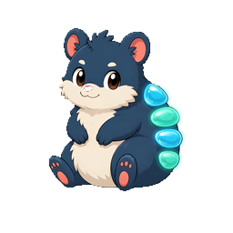

你的 Island， 可以放些什么？What will you put on your Island?
从随手放下的文件，到日常组件和工具。选你需要的，留在顺手的位置。From a file you set down to the tools you use every day. Choose what you need and keep it within reach.
先把内容放好。A place for your content.
收纳与内容库Shelf & content library
Pro
先收下文件、图片、文字和链接，再搜索、整理或带到其他应用。Keep files, images, text, and links, then find, organize, or move them to another app.
不限项目数量，支持标签、编辑、固定、批量操作与最近删除恢复，也可保护敏感内容、搜索图片和 PDF 中的文字（OCR）。No item limit. Includes tags, editing, pinning, batch actions, Recently Deleted recovery, sensitive-content protection, and image/PDF text search (OCR).
文件Files
Free
浏览你选择的本地文件夹。Browse local folders you choose.
首次选择文件夹需要授权；你可以重新选择无法访问的目录。Folder access requires permission. You can select an inaccessible folder again to restore access.
抬眼，看看现在。Your day, at a glance.
时钟Clock
Free
把当前时间留在岛上，一眼就能看到。Keep the time on the Island, ready at a glance.
可与其他组件组合使用。Combine it with other components.
天气Weather
Free
在 Island 查看所选地点的天气。See the weather for your selected location on the Island.
需要联网；使用当前位置时会请求定位授权。Requires an internet connection. Using your current location requests location permission.
番茄钟Pomodoro
Pro
开始一段专注时间，查看进度并安排休息。Start a focus session, follow your progress, and take a break.
支持提醒设置；相关系统提醒可能需要授权。Includes reminder settings. System notifications may require permission.
照片Photo
Pro
让自己喜欢的照片成为 Island 的一部分。Make a favorite photo part of your Island.
由你选择照片或来源。Choose the photos or source yourself.
打开工具，把事做完。Open a tool. Get something done.
NoteNote
Pro
记下临时想法或一小段文字，留待之后处理。Save a passing thought or a short piece of text for later.
在本机保存，也可从 Note 中继续处理内容。Saved locally, ready to work with later.
应用Apps
Free
浏览和启动常用应用，减少来回寻找。Browse and launch apps without searching around your Mac.
应用启动使用 macOS 已安装的应用。Launches apps installed on your Mac.
剪贴板Clipboard
Pro
找回复制过的文本、链接和图片。Find text, links, and images you copied earlier.
历史记录默认关闭。启用后在本机加密保存，可排除应用、设定保留期限或随时清空。History is off by default. Enable local encrypted storage, exclude apps, set retention, or clear it at any time.
翻译Translate
Pro
输入文字，在岛上查看与复制译文。Enter text, then read and copy its translation on the Island.
需要联网；文字会发送到你选择的翻译服务。部分服务需要自己的 API 凭据并可能单独收费。Requires a connection and sends text to your chosen translation service. Some services need your own API credentials and may charge separately.
Pobb 和茄博士都是岛上伙伴体验中的角色。它们和时钟、照片、工具共享 Sill，让你的 Island 多一点生气。Pobb and Professor Aubie are characters in the Island companion experience. They share Sill with clocks, photos, and tools, bringing a little life to your Island.
岛上伙伴、内置动态背景和自定义图片背景包含在 Sill Pro 中。网站上的 3D 竞速是互动演示。World Landmarks 背景包包含在 Pro 与有效试用中。其他扩展包按各自说明提供，Pro 不自动解锁全部包。Island companions, included living backgrounds, and custom image backgrounds come with Sill Pro. The website’s 3D race is an interactive demonstration. The World Landmarks background pack is included with Pro and an active trial. Other packs follow their own terms; Pro does not automatically unlock every pack.

Pobb · 核核Pobb茄博士Professor Aubie
放在你习惯的位置。Keep it where it works for you.
Island
屏幕顶部，放文件、看组件，或展开工具。Free 包含 Apps、Files、时钟与天气；Pro 工具和组件可按需加入。At the top of the screen: keep files, see components, or open tools. Free includes Apps, Files, Clock, and Weather. Add Pro tools and components as needed.
主窗口Main window
无需 Pro 即可浏览工具与组件目录、预览并调整基础设置。Pro 专属功能和设置需要 Pro。Browse the tools and components catalog, preview, and adjust basic settings without Pro. Pro features and their settings require Pro.
从 Apps、Files、时钟和天气开始，免费使用。Start free with Apps, Files, Clock, and Weather.